방수산업기사 (2014-08-17 기출문제)
1과목: 방수일반
1. 산업안전보건법령에 따른 중대재해에 속하지 않는 것은?
- 사망자가 2명 발생한 재해
- 부상자가 동시에 10명 발생한 재해
- 직업성질병자가 동시에 5명 발생한 재해
- 3개월 이상의 요양이 필요한 부상자가 동시에 2명 발생한 재해
(정답률: 80%)

2. 철근콘크리트 구조에 관한 설명으로 옳지 않은 것은?
- 형태를 자유롭게 구성할 수 있다.
- 균열 발생이 쉽고 국부적으로 파손되기 쉽다.
- 콘크리트는 녹슬기 쉽고 열에 약한 철근을 감싸준다.
- 철근은 압축력에 약한 콘크리트의 단점을 보완하는 역할을 한다.
(정답률: 73%)
3. 다음은 서중 콘크리트에 관한 설명이다. ( )안에 알맞은 것은?
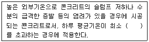
- 22℃
- 25℃
- 28℃
- 32℃
(정답률: 80%)
4. 건축제도에 사용되는 선의 종류와 용도의 연결이 옳은 것은?
- 1점 쇄선 - 인출선
- 2점 쇄선 - 상상선
- 굵은 실선 - 기준선
- 가는 실선 – 참고선
(정답률: 90%)
5. 철강 표면 또는 금속 소지의 녹 방지를 목적으로 사용되는 방청도료에 속하지 않는 것은?
- 래커 프라이머
- 에칭 프라이머
- 광명단 조합페인트
- 아연 분말 프라이머
(정답률: 알수없음)
6. 금속 커튼월의 성능 시험 중 시험소 실물 모형 시험(mock up test)의 시험종목에 속하지 않는 것은?
- 예비시험
- 기밀시험
- 차음시험
- 정압수밀시험
(정답률: 80%)
7. 한국산업표준(KS)에 따른 포틀랜드 시멘트의 종류에 속하지 않는 것은?
- 조강 포틀랜드 시멘트
- 저열 포틀랜드 시멘트
- 백색 포틀랜드 시멘트
- 중용열 포틀랜드 시멘트
(정답률: 73%)
8. 건물 하부의 지하실 바닥전체를 1개의 일체식 기초로 축조하여 상부구조인 기둥의 하중을 지지하도록 하는 기초형식은?
- 독립기초
- 온통기초
- 복합기초
- 연속기초
(정답률: 100%)
9. 다음은 소음·진동관리법령에 따른 공사장 방음시설의 설치에 관한 기준 내용이다. ( )안에 알맞은 것은?
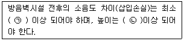
- ㉠ 5dB, ㉡ 2.5m
- ㉠ 5dB, ㉡ 3m
- ㉠ 7dB, ㉡ 2.5m
- ㉠ 7dB, ㉡ 3m
(정답률: 82%)
10. 산업안전보건기준에 관한 규칙상 작업에 착용하여야 하는 보호구의 연결이 옳은 것은?
- 근로자가 추락할 위험이 있는 작업 : 보안경
- 전정기의 대전에 의한 위험이 있는 작업 : 방열복
- 선창 등에서 분진이 심하게 발생하는 하역작업 : 보안면
- 높이 2m이상의 추락할 위험이 있는 장소에서 하는 작업 : 안전대
(정답률: 77%)
11. 재해를 예방하기 위한 하아비(Harvey.J.H)의 시정책(3E)에 속하지 않는 것은?
- 감독의 실시
- 교육 및 훈련
- 처벌규정 강화
- 시설과 장비의 결함개선
(정답률: 80%)
12. 제자리 콘크리트 말뚝 중 심플렉스 파일을 개량한 것으로 지내력을 증대하기 위하여 말뚝 선단에 구근을 형성하는 것은?
- 페데스탈 파일
- 컴프레솔 파일
- 레이몬드 파일
- 프리팩트 파일
(정답률: 60%)
13. 건축제도의 글자 및 치수에 관한 설명으로 옳은 것은?
- 숫자는 로마 숫자를 원칙으로 한다.
- 문장은 가로쓰기로 하여야 하며, 세로쓰기로 하여서는 안된다.
- 글자체는 수직 또는 15°경사의 고딕체로 쓰는 것을 원칙으로 한다.
- 치수의 단위는 센티미터(cm)를 원칙으로 하고, 이 때 단위 기호는 쓰지 않는다.
(정답률: 75%)
14. 굳지 않는 콘크리트 성질 중 워커빌리티에 관한 설명으로 옳지 않은 것은?
- AE제에 의한 연행공기는 워커빌리티를 개선한다.
- 작업의 난이도, 재료분리저항 정도 등을 나타내는 정량적인 성질이다.
- 비빔시간이 과도하게 길면 시멘트의 수화 촉진으로 워커빌리티가 나빠진다.
- 일반적으로 부배합의 경우가 빈배합의 경우보다 워커빌리티가 좋다고 할 수 있다.
(정답률: 72%)
15. 다음 목재의 강도 중 가장 큰 것은? (단, 응력의 방향이 섬유방향에 평행한 경우)
- 횡강도
- 압축강도
- 인장강도
- 전단강도
(정답률: 82%)
16. 홈통에 관한 설명으로 옳지 않은 것은?
- 처마홈통과 선홈통을 연결하는 경사홈통을 깔대기홈통이라 한다.
- 처마 끝에 수평으로 설치하여 빗물을 받는 홈통을 처마홈통이라 한다.
- 처마홈통에서 내려오는 빗물을 지상으로 유도하는 수직홈통을 선홈통이라 한다.
- 두 개의 지붕면이 만나는 자리 또는 지붕면과 벽면이 만나는 수평 지붕골에 쓰이는 홈통을 장식홈통이라 한다.
(정답률: 90%)
17. 중간에 기둥을 두지 않고 구조물의 주요 부분을 케이블 등에 매달아서 인장력으로 저항하는 구조는?
- 쉘 구조
- 절판 구조
- 아치 구조
- 현수 구조
(정답률: 80%)
18. 알루미늄에 관한 설명으로 옳지 않은 것은?
- 내화성이 우수하다.
- 열팽창계수가 크다.
- 압연, 인발 등의 가공성이 좋다.
- 산, 알칼리 및 해수에 침식되기 쉽다.
(정답률: 82%)
19. 다음과 같은 조건에 있는 현장치기콘크리트의 최소 피복두께는?
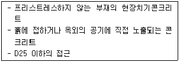
- 40mm
- 50mm
- 60mm
- 80mm
(정답률: 77%)
20. 화재의 분류에서 전기배선 및 전기기구 등에서 발생하는 화재를 의미하는 것은?
- A급 화재
- B급 화재
- C급 화재
- D급 화재
(정답률: 67%)
2과목: 방수재료
21. 도막 방수층에서 사용되는 것으로 영문기호 “Gu”로 표기되는 재료는?
- 우레탄 고무
- 아크릴 고무
- 실리콘 고무
- 고무 아스팔트
(정답률: 80%)
22. 건축용 실령재를 용도에 따라 구분할 경우, 글레이징에 사용하는 실령재는?
- A형
- C형
- F형
- G형
(정답률: 73%)
23. 인장성능에 관한 품질시험 항목이 규정되어 있지 않은 것은?
- 아스팔트 루핑
- 개량 아스팔트 방수 시트
- 폴리우레아수지 도막 방수제
- 규산질계 분말형 도포방수재
(정답률: 55%)
24. 콘크리트 바탕과 방수시트의 접착을 양호하게 유지하기 위한 바탕조정용 접착제로 사용되는 것은?
- 아스팔트 싱글
- 아스팔트 루핑
- 아스팔트 컴파운드
- 아스팔트 프라이머
(정답률: 75%)
25. 자착식형 고무화 아스팔트 방수 시트의 내움푹패임 성능 기준으로 옳은 것은?
- 200% 이상
- 1.5N/mm 이상
- 48시간 정치 후 투수되지 않을 것
- -20℃에서 보호 필름 또는 시트에 잔금, 박리현상이 생기지 않을 것
(정답률: 42%)
26. 합성 고분자게 방수 시트 중 섬유, 보강포 등을 함침 또는 적충하여 물리적 성능을 증진시킨 시트 형태는?
- 일반 복합형
- 일반 균질형
- 보강 복합형
- 보강 균질형
(정답률: 60%)
27. 한국산업표준(KS)에 따른 개량 아스팔트 방수 시트의 겉모양 규정으로 옳은 것은?
- 미세한 굴곡이나 기복도 없어야 한다.
- 끝부분의 절단선이 길이 방향에 대해서 45°로 되어 있어야 한다.
- 1롤의 길이가 8.0m 이상인 경우, 1롤 도중에서 3곳이상 절단되어 있지 않아야 한다.
- 1롤의 길이가 8.0m 이상이고 1롤 도중에서 1곳이 절단되어 있는 경우, 한편의 길이는 2.0m이상이어야 한다.
(정답률: 50%)
28. 다음의 시멘트 액체형 방수제의 품질시험 항목 중 시험에 사용되는 시험체의 개수가 가장 적은 것은?
- 안정성
- 응결시간
- 압축강도
- 부착강도
(정답률: 70%)
29. 다음 중 지붕방수에 사용되는 방수재료의 요구성능과 가장 거리가 먼 것은?
- 내후성
- 내충격성
- 습윤면 부착성
- 바탕재에 대한 거동 추종성
(정답률: 알수없음)
30. 시멘트 액체형 방수제를 주성분에 따라 유기질계와 무기질계로 구분할 경우, 다음 중 무기질계에 속하지 않는 것은?
- 파라핀계
- 염화칼슘계
- 규산소다계
- 실리케이트계
(정답률: 73%)
31. 방수재료를 정형재료와 부정형재료로 구분할 경우, 다음 중 정형재료에 속하지 않는 것은?
- 분말형
- 시트형
- 패널형
- 매트형
(정답률: 64%)
32. 자착형 시트 방수공사에 사용되는 자착형 방수 시트의 종류에 속하지 않은 것은?
- 천연고무계
- 부탈고무계
- 우레아고무계
- 고무 아스팔트계
(정답률: 알수없음)
33. 한국산업표준(KS)에 다음과 같이 용도가 정의된 방수 공사용 아스팔트의 종류는?
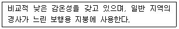
- 1종
- 2종
- 3종
- 4종
(정답률: 73%)
34. 합성 고분자계 방수 시트 중 균질 시트의 인장강도 품질기준은?
- 0.5N/mm2이상
- 7.5N/mm2이상
- 10N/mm2이상
- 20N/mm2이상
(정답률: 50%)
35. 아스팔트 펠트 제품은 “아스팔트 펠트 440품”과 같이 호칭한다. “440”이 의미하는 것은?
- 원지의 단위 면적 질량
- 제품의 단위 면적 질량
- 제품 1두루마리의 길이
- 제품 1두루마리의 나비
(정답률: 59%)
36. 시멘트 혼입 폴리머계 방수재의 품질시험 항목에 속하지 않는 것은?
- 신장률
- 부착강도
- 인장성능
- 내알칼리성
(정답률: 알수없음)
37. 멤브레인 방수층 성능 평가 시험의 종류 중 시트계 방수층에는 적용하나 도막계 방수층에는 적용하지 않는 것은?
- 수밀성 시험
- 처짐 저항성 시험
- 충격 저항성 시험
- 풍압 저항성 시험
(정답률: 84%)
38. 멤브레인 방수층 성능 평가 시험방법에 따른 패임 저항성 시험 결과가 다음과 같은 경우 시험결과의 표시는?
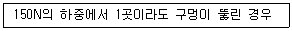
- 패임 저항성 1
- 패임 저항성 2
- 패임 저항성 3
- 패임 저항성 4
(정답률: 55%)
39. 한국산업표준(KS)에 따른 개량 아스팔트 방수 시트의 두께, 나비, 길이 치수의 표시값에 대한 플러스(+)측의 허용차는?
- 0.5%
- 5%
- 규정하지 않는다.
- 인정하지 않는다.
(정답률: 54%)
40. 한국산업표준(KS)에 따른 건설용 도막 방수재 중 인장강도가 가장 큰 것은?
- 아크릴 고무계
- 우레탄 고무계
- 실리콘 고무계
- 고무 아스팔트계
(정답률: 77%)
3과목: 방수시공
41. 방수시공 직적의 바탕 상태의 표준으로 옳지 않은 것은?
- RC 또는 PC 바탕의 거친면은 연마기 등으로 치밀하고 매끄럽게 조정되어 있어야 한다.
- 건조를 전제로 하는 방수공법을 적용할 경우의 바탕표면 함수상태는 10% 이하이어야 한다.
- 바탕 표면에 돌출된 철선 등은 바탕면까지 절단하여 연마기 등으로 조정되어 있어야 한다.
- 치켜올림부 표면은 요철이 없도록 단차가 있는 곳은 연마기 등으로 평탄하게 조정되어 있어야 한다.
(정답률: 28%)
42. 건축공사표준시방서에 따라 다음과 같은 방수층에 적용하는 보호 및 마감에 속하지 않는 것은?
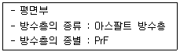
- 마감도료
- 둥근 자갈
- 콘크리트 블록
- 아스팔트 콘크리트
(정답률: 80%)
43. 아스팔트 방수공사에 사용되는 아스팔트의 종별 용융온도의 표준이 옳은 것은?
- 1종 : 210 ~ 220℃
- 2종 : 240 ~ 250℃
- 3종 : 250 ~ 260℃
- 4종 : 270 ~ 280℃
(정답률: 50%)
44. 다음은 바탕의 물매에 관한 설명이다. ( )안에 알맞은 것은?
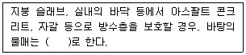
- 1/20 ~ 1/10
- 1/50 ~ 1/20
- 1/100 ~ 1/50
- 1/200 ~ 1/100
(정답률: 73%)
45. 합성고분자계 시트 방수공사에서 시트 붙이기에 관한 설명으로 옳지 않은 것은?
- 비가황고무계 방수시트의 경우, 시트 상호간의 접합폭은 종횡으로 70mm로 한다.
- 가황고무계 방수시트의 경우, 시트 상호간의 접합폭은 종횡으로 100mm로 한다.
- 비가황고무계 방수시트의 경우, 치켜올림부와 평면부와의 접합폭은 100mm로 한다.
- 시트의 접합부는 원칙적으로 물매 위쪽의 시트가 물매 아래쪽 시트의 위에 오도록 겹친다.
(정답률: 46%)
46. 건축공사표준시방서에 따른 시멘트 액체방수층의 층별 구성으로 옳은 것은? (단, 바닥용의 경우)
- 1층 : 프라이머
- 2층 : 방수시멘트 페이스트 1차
- 4층 : 보강포
- 5층 : 폴리머 시멘트 모르타르
(정답률: 60%)
47. 시멘트 혼입 폴리머계 방수공사에서 방수층 바름에 관한 설명으로 옳지 않은 것은?
- 보강재는 방수층 1층 시공 전에 미리 삽입하여 둔다.
- 각 층의 시공간격은 온도 20℃에서 5~6시간을 표준으로 한다.
- 바탕이 건조할 경우에는 수화응고형 방수재의 수분이 과도하게 흡수되지 않도록 바탕을 물로 적신다.
- 프라이머는 솔, 롤러 또는 뿜칠기로 규정량을 균일하게 도포하고, 흡수가 현저할 경우에는 추가 도포하여 조정한다.
(정답률: 59%)
48. 아스팔트 방수공사의 방수공법 중 실내 주차장에 적용되는 것은? (단, 건축공사표준시방서 내용에 따른다.)
- 보행용 전면접착
- 보행용 부분접착
- 노출용 부분접착
- 단열재 삽입 전면접착
(정답률: 알수없음)
49. 건축공사표준시방서에 따른 규산질계 도포방수공사의 방수층 적용 부위에 속하지 않는 것은? (단, 방수층의 위치가 수압측인 경우)
- 외벽
- 바닥
- 피트(벽)
- 수조(바닥)
(정답률: 67%)
50. 건축공사표준시방서에 ᄄᆞ른 벤토나이트 방수공사의 보호층으로 적합하지 않은 것은?
- 두께 6mm의 하드보드
- 두께 50mm의 콘크리트
- 두께 12.7mm의 섬유형 방수성 보호판
- 두께 3.9mm의 아스팔트섬유 혼입 보호판
(정답률: 54%)
51. 도막방수공사에서 방수재의 도포에 관한 설명으로 옳은 것은?
- 평면 부위를 도포한 다음, 치켜올림 부위를 도포한다.
- 방수재의 겹쳐 바르기는 원칙적으로 앞 공정에서의 겹쳐 바르기 위치와 동일한 위치에서 한다.
- 고무 아스팔트계 도막방수재의 외벽에 대한 스프레이시공은 아래에서부터 위의 순서로 실시한다.
- 지정된 겹쳐 바르기의 시간 간격을 초과한 경우, 프라이머를 도포하고 건조하기 전에 겹쳐 바르기를 한다.
(정답률: 59%)
52. 자착형 시트 방수공사에 사용되는 자재에 관한 설명으로 옳지 않은 것은?
- 프라이머는 8시간 이내에 건조되는 품질의 것으로 한다.
- 보강용 겔(gel)은 저점도의 제품으로 기밀성이 우수한 것으로 한다.
- 보강용 겔(gel)은 떠붙임이 용이한 도막형과 시공이 용이한 막대형으로 구분하여 적용한다.
- 보호완충재는 지하 외벽의 방수층 표면에 부착하여 모래 등의 되메우기 재의 충격 및 침하로부터 방수층을 보호할 수 있는 것으로 한다.
(정답률: 67%)
53. 자착형 시트 방수공사 중 고무 아스팔트계 자착형 방수시트의 공정 순으로 옳은 것은? (단, 노출용(1/100~1/50)으로 평탄부(단열재 있음)의 경우)
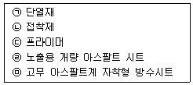
- ㉢→㉠→㉡→㉣→㉤
- ㉢→㉠→㉡→㉤→㉣
- ㉢→㉡→㉠→㉣→㉤
- ㉢→㉡→㉠→㉤→㉣
(정답률: 80%)
54. 주차장 방수공사에 관한 설명으로 옳지 않은 것은?
- 급유장, 수리장 등이 병설되는 경우 내유성이 우수한 아스팔트 방수로 하는 것이 좋다.
- 배수로와 트랩 주위는 방수층의 시공이 어렵고 들뜸이 발생하기 쉬우므로 주의하여 시공한다.
- 주차장 내의 물에는 유류 등이 혼합되어 있을 가능성이 있으므로 방수재의 선택에 있어 내유성에 대한 고려가 필요하다.
- 한랭지에서는 제설제로 염화칼슘을 사용하는 경우가 있으므로 방수재의 선택에 있어 내염성에 대한 고려가 필요하다.
(정답률: 70%)
55. 도막방수공사에서 현장타설 철근콘크리트 바탕의 타설이음 부위처리 방법으로 옳지 않은 것은?
- 접합부를 두께 1mm 이상, 폭 100mm 정도의 가황고무 또는 비가황고무 테이프로 붙인다.
- 접합부를 절연용 테이프로 붙이고, 그 위를 두께 2mm이상, 폭 100mm 이상으로 방수재를 덧도포한다.
- 접합부를 폭 100mm 이상의 합성섬유 부직포 등 보강포로 덮고, 그 위를 두께 2mm이상, 폭 100mm 이상으로 방수재를 덧도포한다.
- 현장타설 철근콘크리트 바탕의 타설 이음부를 덮을 수 있는 적당한 폭의 절연용 테이프를 붙이고, 절연용 테이프의 양 끝에서 각각 10mm를 더한 폭 만큼 두께 2mm이상의 방수재를 덧도포한다.
(정답률: 34%)
56. 시트방수재와 도막방수재의 적층 복합방수공법의 종류가 다음과 같은 경우, 3층에 사용되는 것은?
- 보강포
- 프라이머
- 도막방수재
- 시트방수재
(정답률: 9%)
57. 건축공사표준시방서에 따른 합성고분자계 시트 방수층의 적용 부위에 속하지 않는 것은? (단, 적용 바탕은 RC이며, 가황고무계(S-RuF)시트 사용)
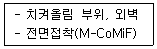
- 지붕
- 차양
- 발코니
- 지하 외벽
(정답률: 55%)
58. 아스팔트 방수공사에서 지붕 방수층의 보호 및 마감의 시공법에 관한 설명으로 옳지 않은 것은? (단, 현장타설 콘크리트의 경우)
- 신축줄눈은 설치하지 않는다.
- 방수층이 완성된 다음 단열재를 깔고 그 위에 절연용시트를 깐다.
- 치켜올림부의 보호 및 마감을 건식공법으로 할 경우에는 공사지방에 따른다.
- 콘크리트에 균열방지를 위한 와이어 메시를 타설두께의 중간 위치에 삽입한다.
(정답률: 알수없음)
59. 건축공사표준시방서에 따른 계량 아스팔트시트 방수층을 구성하는 프라이머의 사용량은?
- 0.2kg/m2
- 0.3kg/m2
- 0.4kg/m2
- 0.5kg/m2
(정답률: 82%)
60. 개량 아스팔트시트 방수공사의 방수시트 붙이기에 관한 설명으로 옳지 않은 것은?
- 바탕에 부분적으로 접착시키는 경우의 시공법은 공사시방에 따른다.
- ALC패널 및 PC패널의 단변 접합부 등 큰 움직임이 예상되는 부위는 미리 폭 300mm정도의 덧붙임용 시트로 처리한다.
- 지하 외벽 및 수용장 등의 벽면에서 개량 아스팔트 방수시트 붙이기는 미리 개량 아스팔트 방수시트를 2m정도로 재단하여 시공한다.
- 일반부에서 개량 아스팔트 방수시트가 상호 겹쳐진 접합부를 가열 및 용융시켜 붙이는 경우, 개량 아스팔트가 삐져 나올 정도로 눌러서는 안된다.
(정답률: 64%)
4과목: 방수유지관리
61. 지붕 파라펫 부위의 누수원인과 가장 거리가 먼 것은?
- 누름벽돌 내 모르타르 충진 불량
- 방수 전 청소 및 이물질 제거작업 불량
- 파라펫 옹벽 방수층 끝마무리 작업 부실
- 드레인 매설부위의 불확실 및 옥상바닥의 구배 불량
(정답률: 82%)
62. 다음 중 누수의 메카니즘(mechanism)에 따른 누수의 요인과 가장 거리가 먼 것은?
- 물
- 틈
- 압력차
- 온도차
(정답률: 67%)
63. 방수층 파단 하자를 방지하기 위한 대책으로 옳지 않은 것은?
- 보강재는 치수안정성이 낮은 것을 사용한다.
- 바탕과 팽창계수가 유사한 방수재료로 시공한다.
- 방수층의 동시 파단 위험을 경감하는 목적으로 보강재를 시공한다.
- 바탕 콘크리트의 균열 부위는 밀착공법보다 절연공법으로 시공하는 것이 효과적이다.
(정답률: 60%)
64. 조적조의 표면에 발수제를 사용하는 이유로 옳은 것은?
- 미려한 광택 확보
- 벽돌의 중성화 방지
- 모르타르의 탈락 방지
- 누수 및 백화현상 방지
(정답률: 86%)
65. 아스팔트 방수공법의 보수 방법으로 옳지 않은 것은?
- 아스팔트를 바를 때는 2차 바름으로 바른다.
- 보강포를 보수면보다 넓게 재단하여 적충한다.
- 절개한 면을 가열 없이 쇠흙손을 사용하여 고르게 펴 바른다.
- 작은 결함 내지 파손부위는 건전한 부위까지 광범위하게 절개한다.
(정답률: 75%)
66. 다음 설명에 알맞은 누수 보수 조사 단계는?
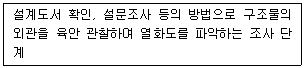
- 본 조사
- 예측 조사
- 추가 조사
- 진단 조사
(정답률: 79%)
67. 옥상부위 적용되는 노출 방수공법에서 주로 발생하는 부풀음 하자를 방지하기 위하여 설치하는 것은?
- 고정철물
- 에어벤트
- 보호완충재
- 본드 브레이크
(정답률: 54%)
68. 다음 중 방수층 시공 완료 후 누수시험의 적용이 가장 곤란한 것은?
- 수조
- 실내방수
- 지하 구조물
- 소규모의 평지붕
(정답률: 77%)
69. 지하 누수 보수 공법 중 구조체를 관통시켜 누수 보수재를 기계적 압력을 통해 주입하여 배면에 방수층을 형성하는 공법은?
- 배면 주입공법
- 방수층 재형성 주입공법
- 균열 및 조인트 주입공법
- 표면 절개 후 방수재 충전공법
(정답률: 84%)
70. 다음 중 콘크리트 바탕면의 균열폭과 누수량의 관계를 가장 올바르게 표현한 것은?
- 균열폭에 의한 누수량은 균열폭의 2제곱에 비례한다.
- 균열폭에 의한 누수량은 균열폭의 3제곱에 비례한다.
- 균열폭에 의한 누수량은 균열폭의 4제곱에 비례한다.
- 균열폭에 의한 누수량은 균열폭의 5제곱에 비례한다.
(정답률: 73%)
71. 도막 방수공사에서 발생되는 하자 유형이 아닌 것은?
- 바탕콘크리트의 물흐름 경사가 완만할 때 발생된다.
- 도막방수재의 경우 현장배합비가 일정치 않을 때 발생된다.
- 물고임 방지를 위해 시트간 이음을 맞댐이음으로 하는 것이 좋다.
- 시트방수재의 경우 열에 의한 수축과 팽창으로 굴곡된 부위에서 발생된다.
(정답률: 20%)
72. 도막 방수공사에서 발생되는 하자 유형이 아닌 것은?
- 핀홀
- 부풀음
- 접합부 찢김
- 들뜸 및 박리
(정답률: 84%)
73. 파라펫 코너부의 누수원인을 설계상 문제와 시공상 문제로 구분할 경우, 다음 중 설계상 문제에 속하는 것은?
- 신축줄눈 설치 미흡
- 재료별 열팽창 계수 산정 무시
- 현장관리자의 도면 및 기술 검토 부족
- 슬래브와 파라펫 콘크리트의 분리 타설
(정답률: 59%)
74. 방수공사 하자 유형 중 방수층 파단의 발생 원인과 가장 거리가 먼 것은?
- 시트방수에서 접합부 상호 단차
- 도막방수에서 뽀강재 없이 시공된 경우
- 콘크리트 구조물의 거동에 따른 수축과 팽창의 반복
- 방수층이 바탕 콘크리트에 완전 밀착되어 시공된 경우
(정답률: 34%)
75. 다음과 같은 파라펫 부위 누수 원인의 보수대책으로 옳지 않은 것은?
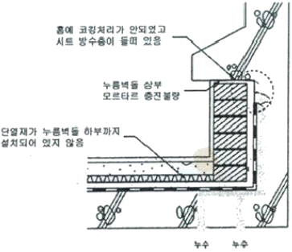
- 방수층 끝부분은 홈을 파서 방수재를 말아 넣고 코킹한다.
- 방수 전 콘크리트면 청소 및 코너부위 면접기를 철저히 한다.
- 방수턱의 폭은 누름 벽돌 마감선에서 3cm 이상 유지되게 한다.
- 방수턱의 높이는 보호 모르타르 마감면에서 5cm 이하로 시공한다.
(정답률: 73%)
76. 다음 중 시트 방수공사의 열융착에 의한 접합부 시공에서 발생되는 하자를 예방하기 위한 방법과 가장 거리가 먼 것은?
- 두껍고, 변형이 없는 재질인 경우 실재로 보강한 후 시공한다.
- 직접 가열 방식을 적용하여 상호 부착면을 완전히 녹인 후 시공한다.
- 기계식 열풍 융착기를 사용하여 가열과 롤링에 의한 압착을 동시에 실시한다.
- 불꽃의 불규칙한 연소로 시트면의 부착불량 부위가 발생하지 않도록 시공한다.
(정답률: 59%)
77. 다음은 옥상 파라펫 부위의 상세도를 나타낸 것이다. 동그라미로 표시된 부분의 명칭은?
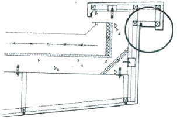
- 신축줄눈
- 누름 벽돌
- 물끊기 홈
- 루프 드레인
(정답률: 70%)
78. 외벽부의 이질재 접촉면, 각종 조인트, 균열 등에 의한 누수의 보수대책으로 옳지 않은 것은?
- 방수턱 설치
- 코킹작업 실시
- 물구멍(Weep Hole) 설치
- 하인방 상단부 역구배 형성
(정답률: 알수없음)
79. 누수침입 경로 조사 방법과 적용부위의 연결이 옳지 않은 것은?
- 적외선 장치 – 옥상 입면
- 가스 압입법 – 옥상 평면
- 특수 검사액법 – 외벽 부위
- 국부파괴 점검 – 옥상 입면
(정답률: 46%)
80. 누수 부위에 대한 콘크리트의 보수, 보강 방법으로 옳지 않은 것은?
- 퍼터 수지로 표면처리한다.
- 균열은 에폭시로 주입한다.
- V 커팅의 폭은 10mm 이상으로 한다.
- 0.5mm 이상의 균열은 충전공법을 사용한다.
(정답률: 50%)